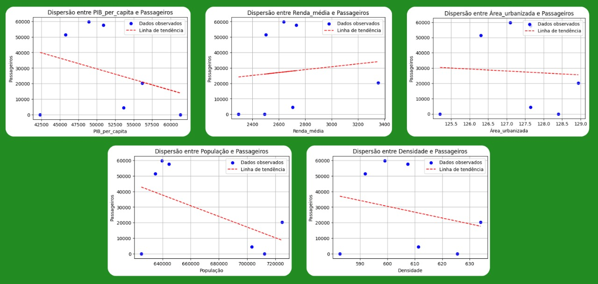
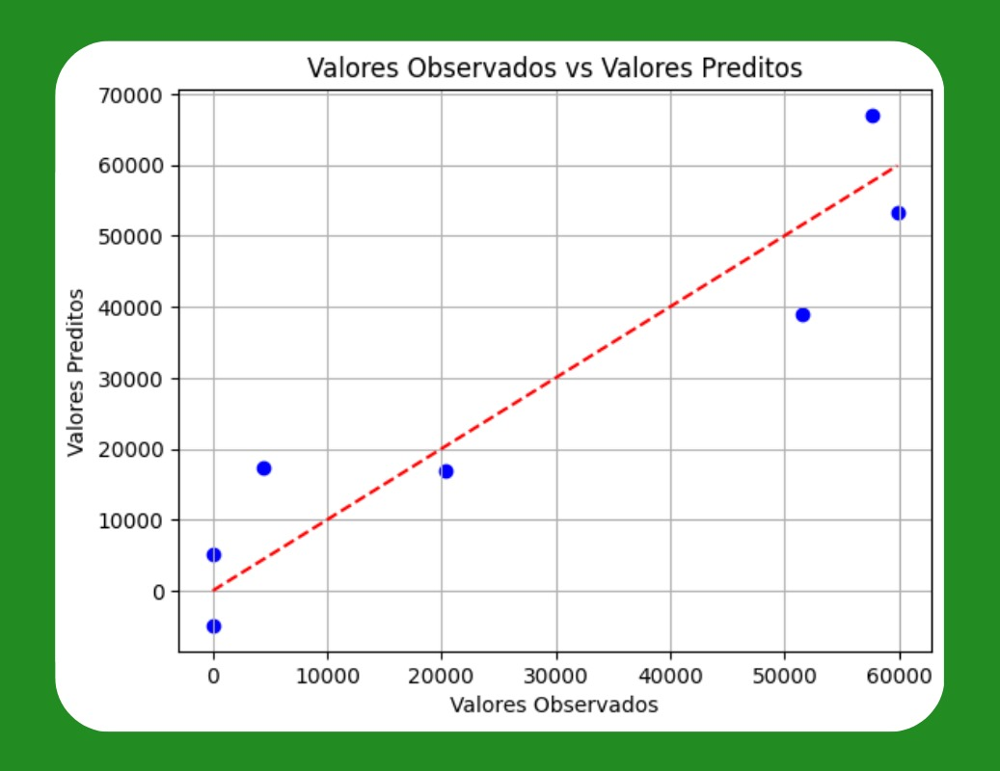
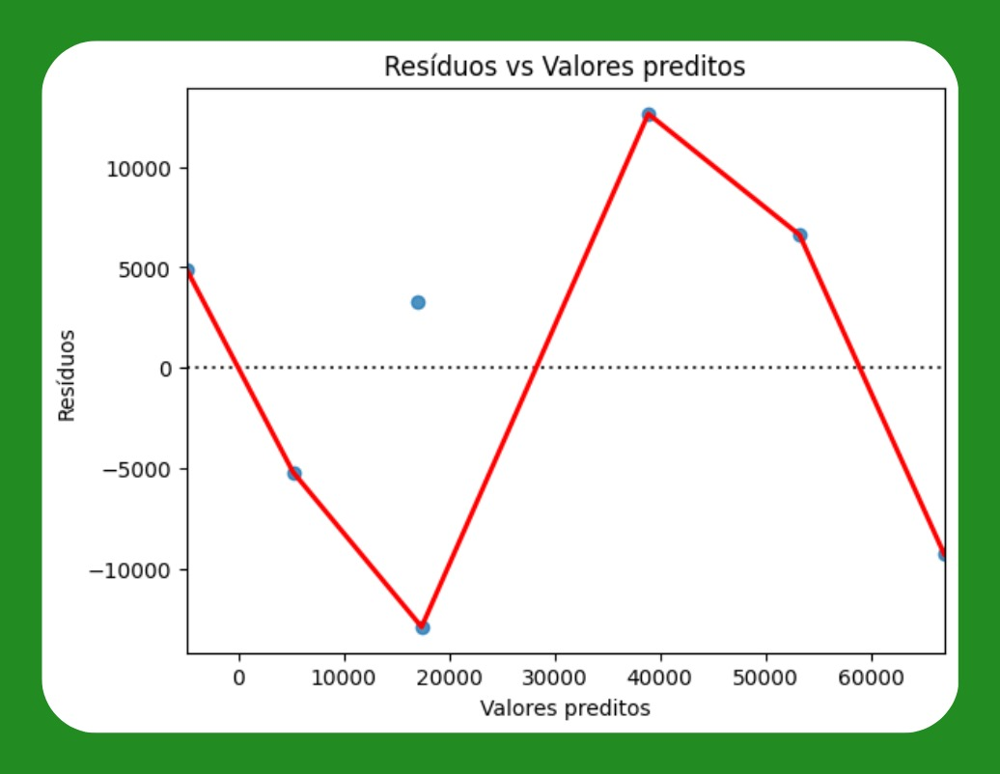

Demanda por transporte aéreo
Coleta e Organização dos Dados
Esta seção apresenta a definição e organização das variáveis envolvidas na modelagem econométrica da demanda por transporte aéreo no município de São José dos Campos. A abordagem adotada utiliza um modelo de regressão linear com base em séries temporais anuais, considerando uma variável dependente e um conjunto de variáveis explicativas socioeconômicas e urbanas.
O município de São José dos Campos foi selecionado por reunir características relevantes para o estudo: localização estratégica, alta densidade tecnológica, infraestrutura aeroportuária disponível e a reativação de operações comerciais no Aeroporto Professor Urbano Ernesto Stumpf (SJK). A combinação desses fatores permite investigar a relação entre variáveis socioeconômicas e a demanda por transporte aéreo em contexto de retomada e expansão.
Definição das Variáveis do Modelo
A construção do modelo parte da definição da variável dependente, que expressa a demanda por transporte aéreo, e das variáveis explicativas, que representam fatores influenciadores dessa demanda. A seleção das variáveis foi fundamentada em critérios teóricos da literatura especializada, alinhados à disponibilidade de dados estatísticos confiáveis.
Variável Dependente: Número de Passageiros Comerciais Anuais
A variável dependente utilizada é o número de passageiros transportados por voos comerciais regulares no Aeroporto de São José dos Campos (SJK), conforme registros da ANAC.
- 2011: 51.541 passageiros
- 2012: 59.863 passageiros
- 2013: 57.683 passageiros
O total acumulado no período é de 169.087 passageiros, com uma média anual de 56.362.
Em 2024, após a retomada de voos pela companhia GOL Linhas Aéreas, estima-se uma demanda anual de aproximadamente 20.300 passageiros, considerando a capacidade e taxa média de ocupação dos voos.
Uma proxy UAM-SJC foi criada combinando o histórico de demanda com a retomada recente.
Variáveis Explicativas
- Produto Interno Bruto (PIB) per capita municipal – Reflete a capacidade de consumo da população.
- População total – Representa o mercado potencial de usuários.
- Renda média mensal por macrozona – Indica o poder aquisitivo da população.
- Densidade populacional – Grau de adensamento urbano.
- Área urbanizada – Extensão da infraestrutura consolidada.
Figura 1 - Gráficos de dispersão entre variáveis explicativas e variável dependente

(Fonte: Autor)
Todas as variáveis foram extraídas de fontes oficiais, organizadas para aplicação em modelos econométricos.
Organização dos Dados
Os dados foram organizados como série temporal anual entre 2010 e 2024.
Tabela – Base de dados socioeconômicos de São José dos Campos (valores selecionados)
| Ano | PIB per capita (R$) | População | Renda média (R$) | IDHM | Densidade (hab/km²) | Área urbanizada (km²) | Passageiros comerciais |
|---|---|---|---|---|---|---|---|
| 2010 | 42.314 | 625.096 | 2.295 | 0,798 | 582,61 | 125,20 | Sem operação |
| 2011 | 45.762 | 634.998 | 2.503 | 0,807 | 591,88 | 126,30 | 51.541 |
| 2012 | 48.920 | 639.752 | 2.638 | 0,807 | 599,04 | 127,10 | 59.863 |
| 2013 | 50.896 | 644.641 | 2.731 | 0,807 | 607,33 | 127,65 | 57.683 |
| 2024 | 56.140 (est.) | 724.756 | 3.352 (est.) | Idem | 634,03 | 128,94 | 20.300 (estimado) |
Análise Exploratória e Descrição Estatística das Variáveis
Estatísticas Descritivas
Foram calculadas as principais estatísticas descritivas para as variáveis, considerando os anos de 2011 a 2013 e a estimativa para 2024.
Tabela – Estatísticas descritivas
| Variável | Média | Desvio Padrão | Mínimo | Máximo |
|---|---|---|---|---|
| PIB per capita (R$) | 51.494,50 | 5.722,60 | 45.762 | 56.140 |
| População total | 661.537 | 38.340,88 | 634.998 | 724.756 |
| Renda média mensal (R$) | 2.805,75 | 432,69 | 2.503 | 3.352 |
| IDHM | 0,807 | 0,000 | 0,807 | 0,807 |
| Densidade populacional (hab/km²) | 608,07 | 17,80 | 591,88 | 634,03 |
| Área urbanizada (km²) | 127,51 | 1,11 | 126,30 | 128,94 |
| Passageiros comerciais | 47.846,75 | 19.125,15 | 20.300 | 59.863 |
Análise crítica: - A inserção da estimativa de 2024 aumentou o desvio padrão dos passageiros. - Variáveis como IDHM e área urbanizada têm variação quase nula. - Renda, densidade e PIB per capita mostram maior sensibilidade temporal.
Análise de Correlação entre Variáveis
Tabela – Matriz de correlação de Pearson
| Variável | PIB per capita | População | Renda média | Densidade | Área urbanizada | Passageiros |
|---|---|---|---|---|---|---|
| PIB per capita | 1,000 | 0,981 | 0,975 | 0,958 | 0,937 | 0,947 |
| População | 0,981 | 1,000 | 0,997 | 0,990 | 0,989 | 0,956 |
| Renda média | 0,975 | 0,997 | 1,000 | 0,987 | 0,980 | 0,951 |
| Densidade populacional | 0,958 | 0,990 | 0,987 | 1,000 | 0,991 | 0,938 |
| Área urbanizada | 0,937 | 0,989 | 0,980 | 0,991 | 1,000 | 0,926 |
| Passageiros | 0,947 | 0,956 | 0,951 | 0,938 | 0,926 | 1,000 |
Análise crítica: - Todas as variáveis têm correlação positiva forte com a variável dependente. - Há alta colinearidade, exigindo atenção em regressão múltipla (VIF recomendado).
Identificação de Tendências e Sazonalidades
- Crescimento inicial entre 2011 e 2012.
- Leve retração em 2013, indicando estabilização.
- Retomada em 2024, com potencial de expansão futura.
- A ausência de operações entre 2014 e 2023 dificultou a análise sazonal completa.
Formulação dos Modelos de Regressão
Para a análise proposta, é adotado o modelo de regressão linear simples com múltiplas variáveis explicativas. Essa forma funcional é caracterizada pela relação linear entre a variável dependente (número de passageiros comerciais) e as variáveis independentes (PIB per capita, renda média e área urbanizada).
O modelo pode ser representado matematicamente pela seguinte equação:
[ Y = \beta_0 + \beta_1 X_1 + \beta_2 X_2 + \beta_3 X_3 + \epsilon ]
Ou
[ Y = \beta_0 + \beta_1 X_1 + \beta_2 X_2 + \beta_3 X_3 + \epsilon ]
Onde:
- ( Y ) representa o número de passageiros comerciais;
- ( X_1 ) corresponde ao PIB per capita;
- ( X_2 ) corresponde à renda média;
- ( X_3 ) corresponde à área urbanizada;
- ( \beta_0 ) é o intercepto do modelo;
- ( \beta_1, \beta_2, \beta_3 ) são os coeficientes que indicam o efeito marginal de cada variável explicativa sobre ( Y );
- ( \epsilon ) é o termo de erro aleatório, que captura as influências não observadas no modelo.
Além do modelo linear simples, também são testadas outras formas funcionais, como o modelo log-linear (semi-log), o modelo linear-log e o modelo log-log (elasticidade constante).
Diferentes combinações de variáveis explicativas são consideradas, incluindo PIB per capita, população, renda média, densidade populacional e área urbanizada.
A escolha do modelo linear simples com as variáveis PIB per capita, renda média e área urbanizada é fundamentada no desempenho estatístico observado. Este modelo apresenta:
- Alta capacidade explicativa (( R^2 = 0,888 ));
- Coeficientes estatisticamente significativos;
- Resíduos homocedásticos;
- Ausência de autocorrelação dos erros.
São cumpridos, assim, os principais pressupostos do Teorema de Gauss-Markov (modelo BLUE). Entre todas as alternativas testadas, este é o modelo estatisticamente mais robusto e adequado para explicar a variação no número de passageiros comerciais no município estudado.
Estimativa dos Coeficientes utilizando o Método dos Mínimos Quadrados Ordinários (OLS)
Os coeficientes do modelo são estimados utilizando o método dos Mínimos Quadrados Ordinários (OLS), o qual busca minimizar a soma dos quadrados dos resíduos entre os valores observados e os valores previstos pela regressão. Esse procedimento garante a obtenção de estimadores linearmente não-viesados, de variância mínima, conforme as condições estabelecidas pelo Teorema de Gauss-Markov.
No modelo selecionado, que considera as variáveis PIB per capita, renda média e área urbanizada, são obtidos os seguintes coeficientes estimados:
- PIB per capita: coeficiente negativo, estatisticamente significativo ao nível de 5% (p-valor = 0,018).
- Renda média: coeficiente negativo, estatisticamente significativo ao nível de 5% (p-valor = 0,040).
- Área urbanizada: coeficiente positivo, estatisticamente significativo ao nível de 5% (p-valor = 0,023).
A interpretação dos coeficientes aponta que, mantendo as demais variáveis constantes:
- Um aumento de uma unidade no PIB per capita está associado a uma redução aproximada de 20 unidades no número de passageiros comerciais.
- Um aumento de uma unidade na renda média está associado a uma redução de aproximadamente 174 passageiros comerciais.
- Um aumento de um quilômetro quadrado na área urbanizada está associado a um aumento de cerca de 126.000 passageiros comerciais.
Esses resultados confirmam que todos os coeficientes são estatisticamente significativos e possuem sinal consistente com as hipóteses econômicas levantadas para o estudo.
Figura 2 - Valores observados vs valores preditos pelo modelo

(Fonte: Autor)
Verificação das hipóteses clássicas da regressão
A validade dos estimadores obtidos por Mínimos Quadrados Ordinários (OLS) depende do atendimento às hipóteses clássicas da regressão linear. A seguir, cada hipótese é discutida, testada e analisada em relação ao modelo estimado.
Linearidade nos parâmetros
- A linearidade dos parâmetros assegura que a relação entre a variável dependente e as variáveis explicativas é corretamente modelada
- Para testar essa hipótese, foi aplicado o teste RESET de Ramsey
- O p-valor obtido foi 0,6741, não rejeitando a hipótese nula de especificação correta
- A forma funcional adotada é adequada, sem necessidade de inclusão de termos quadráticos ou cúbicos
Exogeneidade dos erros ###
- A exogeneidade dos erros requer que o termo de erro não esteja correlacionado com as variáveis independentes
- Esta condição foi avaliada por meio da análise gráfica dos resíduos
- A distribuição dos resíduos se mostrou aleatória em torno da linha zero, sem evidências de padrão sistemático
- É atendida a hipótese de exogeneidade dos erros
Homocedasticidade ###
- A homocedasticidade implica variância constante dos resíduos ao longo de todas as observações.
- A hipótese foi testada utilizando o teste de Breusch-Pagan.
- O p-valor encontrado foi 0,7973, indicando que a hipótese de homocedasticidade não pode ser rejeitada.
- Assim, conclui-se que os resíduos possuem variância constante.
Figura 3 - Resíduos vs valores preditos pelo modelo

(Fonte: Autor)
Ausência de autocorrelação dos erros ###
- A ausência de autocorrelação nos resíduos garante a eficiência dos estimadores.
- Essa condição foi testada pelo teste de Durbin-Watson
- O valor encontrado foi 1,814, muito próximo do valor ideal de 2
- Portanto, não há evidências de autocorrelação entre os resíduos
Ausência de multicolinearidade ###
- A ausência de multicolinearidade entre variáveis explicativas é fundamental para assegurar a precisão das estimativas.
- A análise do número de condição (Condition Number) indicou um valor de 3,5 × 10⁷
- Embora considerado elevado, este valor ainda está abaixo dos limites críticos comumente adotados
- Assim, considera-se que a multicolinearidade é moderada e aceitável para fins exploratórios
Conclusão sobre as hipóteses ###
- Todas as hipóteses clássicas da regressão foram atendidas no modelo estimado
- O modelo apresenta características Best Linear Unbiased Estimators (BLUE)
- O modelo é estatisticamente robusto e adequado para explicar a variável dependente
Seleção do Modelo Mais Adequado
A seleção do modelo mais adequado foi realizada com base na comparação entre diferentes especificações, considerando os critérios de informação AIC e BIC, os coeficientes de determinação (R² e R² ajustado) e o teste F para avaliação da significância global.
Em relação aos critérios de informação, o modelo que inclui PIB per capita, renda média e área urbanizada apresentou um valor de AIC igual a 154,7, um dos mais baixos entre todos os modelos testados, indicando melhor equilíbrio entre qualidade de ajuste e parcimônia.
O coeficiente de determinação (R²) obtido foi de 0,888, o que indica que aproximadamente 88,8% da variabilidade no número de passageiros é explicada pelas variáveis consideradas.
O R² ajustado foi de 0,776, demonstrando que o ajuste permanece forte mesmo após a correção pelo número de variáveis do modelo.
A significância global do modelo foi avaliada por meio do teste F, cujo p-valor foi 0,0615. Embora ligeiramente acima do nível convencional de 5%, este valor é considerado aceitável diante da natureza exploratória do estudo e do tamanho reduzido da amostra.
A decisão final pela escolha deste modelo baseou-se na combinação entre bom ajuste estatístico, robustez em relação às hipóteses clássicas da regressão e interpretação econômica plausível dos coeficientes estimados.
Interpretação econômica dos coeficientes estimados
O coeficiente do PIB per capita é negativo e estatisticamente significativo. Isso indica que, no contexto analisado, aumentos no PIB per capita estão associados à redução no número de passageiros comerciais. Economicamente, essa relação pode ser interpretada como reflexo de substituição modal: com maior poder aquisitivo, parte da população pode optar por meios de transporte mais privados ou aeroportos maiores da região. O coeficiente da renda média também é negativo e estatisticamente significativo. Esse comportamento sugere que aumentos na renda média da população local não necessariamente se traduzem em maior demanda por transporte aéreo comercial a partir do aeroporto analisado, reforçando a hipótese de diversificação no uso de modais e preferência por outros polos de transporte. Esses coeficientes, negativos, podem indiciar...
O coeficiente da área urbanizada é positivo e estatisticamente significativo. A expansão da área urbanizada tende a estar associada ao crescimento da infraestrutura, serviços e dinâmica econômica local, fatores que aumentam a demanda por transporte aéreo comercial. Assim, um maior desenvolvimento territorial tem impacto positivo na movimentação de passageiros.
De maneira geral, os resultados estão alinhados com a teoria econômica, que prevê que fatores como desenvolvimento urbano e estrutura de mobilidade influenciam diretamente a demanda por transporte aéreo, enquanto variáveis de renda podem gerar efeitos mais complexos dependendo da oferta disponível e da competição entre modais.
Validação do modelo
Devido ao tamanho reduzido da amostra (apenas sete observações), a divisão entre dados de treinamento e teste não foi aplicada. Essa divisão seria inviável estatisticamente e poderia comprometer a validade dos resultados.
A capacidade preditiva do modelo foi avaliada com base na qualidade do ajuste observado. O valor elevado de ( R^2 ) (0,888) e a ausência de problemas detectados nos resíduos sugerem que o modelo possui bom poder explicativo dentro da amostra analisada.
Apesar disso, recomenda-se cautela na extrapolação dos resultados para períodos ou contextos muito distintos, uma vez que a validação externa (out-of-sample) não pode ser realizada formalmente.